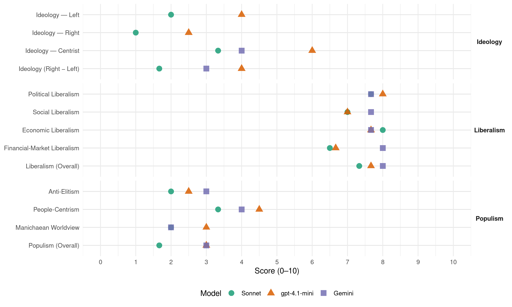

PO (Poland, 2011)
manifesto_id 92435_201110
Get full text: This site shows derived annotations and short verbatim quotes only. The full manifesto text is © Manifesto Project / WZB — obtain it via manifesto-project.wzb.eu using the manifesto_id above.
Headline scores
| Dimension | Sonnet | gpt-4.1-mini | Gemini |
|---|---|---|---|
| Populism (Overall) | 1.7 | 3.0 | 3.0 |
| Anti-Elitism | 2.0 | 2.5 | 3.0 |
| People-Centrism | 3.3 | 4.5 | 4.0 |
| Manichaean Worldview | 2.0 | 3.0 | 2.0 |
| Ideology (Right − Left) | 1.7 | 4.0 | 3.0 |
| Liberalism (Overall) | 7.3 | 7.7 | 8.0 |
| Political Liberalism | 7.7 | 8.0 | 7.7 |
| Social Liberalism | 7.0 | 7.0 | 7.7 |
| Economic Liberalism | 8.0 | 7.7 | 7.7 |
| Financial-Market Liberalism | 6.5 | 6.7 | 8.0 |
Evidence per dimension
Economic Liberalism
Gemini · score 7.0 · verified · chunk 1
“zmniejszanie barier regulacyjnych utrudniających sprzedaż towarów”
Zmniejszymy bariery regulacyjne utrudniających sprzedaż towarów i świadczenie usług drogą elektroniczną.
Gemini · score 8.0 · verified · chunk 2
“poszerzać wolność gospodarczą i obywatelską”
zbędne przepisy tak, aby poszerzać wolność gospodarczą i obywatelską. Skoncentrujemy się na tych obszarach
Gemini · score 8.0 · verified · chunk 3
“intensywnie prywatyzowali przedsiębiorstwa pozostające”
najniższa w UE. Nadal będziemy intensywnie prywatyzowali przedsiębiorstwa pozostające pod kontrolą Skarbu Państwa.
gpt-4.1-mini · score 8.0 · verified · chunk 1
“Obniżymy zasadniczą stawkę VAT do 22%”
Zlikwidujemy formularze podatkowe PIT. Obniżymy zasadniczą stawkę VAT do 22% w 2014 roku, kiedy światowy kryzys gospodarczy powinien ustąpić fazie ożywienia.
gpt-4.1-mini · score 7.0 · verified · chunk 2
“Polska w czasie rządów Platformy Obywatelskiej stała się szóstym najatrakcyjniejszym dla inwesto-rów zagranicznych krajem świata”
Według najbardziej prestiżowych instytutów mię-dzynarodowych za rządów Platformy Obywatelskiej pozycja Polski stanowczo poprawia się w rankin-gach wolności gospodarczej i konkurencyjności I tak się dzieje przy równoczesnej poprawie Indek-su Percepcji Korupcji Transparency International.
gpt-4.1-mini · score 8.0 · verified · chunk 3
“obniżyliśmy stawkę PIT z 19% do 18%, obniżenie 30-procentowej stawki do 18% i 40-procentowej stawki do 32%”
…W pierwszym roku naszego rządu znieśliśmy tzw podatek Religi W 2009 roku, pomimo nastania kryzysu i trud-niejszej sytuacji finansów publicznych, utrzyma-liśmy decyzję o obniżeniu podstawowej stawki PIT z 19% do 18%, obniżenie 30-procentowej stawki do 18% i 40-procentowej stawki do 32% Dzięki temu w kieszeniach Polek i Polaków po-zostało ponad 8 mld złotych więcej. Skróciliśmy termin zwrotu podatku VAT ze 180 do 60 dni, zlikwidowaliśmy ponad 30% sankcji za nieprawidłowe wypełnienie deklaracji podatkowej…
Sonnet · score 7.0 · verified · chunk 1
“Obniżymy zasadniczą stawkę VAT do 22%”
Obniżymy zasadniczą stawkę VAT do 22% w 2014 roku, kiedy światowy kryzys gospodarczy powinien ustąpić fazie ożywienia.
Sonnet · score 9.0 · verified · chunk 2
“deregulacja oraz ograniczanie biurokracji”
w znoszeniu barier dla przedsiębiorczości i aktywności obywatelskiej leżą olbrzymie szanse rozwojowe i dlatego deregulacja oraz ograniczanie biurokracji staną się priorytetem naszej polityki gospodarczej
Sonnet · score 8.0 · verified · chunk 3
“obniżeniu podstawowej stawki PIT z 19% do 18%”
utrzymaliśmy decyzję o obniżeniu podstawowej stawki PIT z 19% do 18%, obniżenie 30-procentowej stawki do 18% i 40-procentowej stawki do 32%.
Financial-Market Liberalism
Gemini · score 8.0 · verified · chunk 3
“zabezpieczające pieniądze Polaków w bankach”
stworzyliśmy ramy prawne dodatkowo zabezpieczające pieniądze Polaków w bankach Już w grudniu 2008 roku
gpt-4.1-mini · score 7.0 · verified · chunk 1
“Zawarliśmy umowy na ponad 13 mld złotych, a wydaliśmy już ponad 3 mld złotych funduszy unijnych na inwestycje w budynki dydaktyczne i laboratoria”
Zawarliśmy umowy na ponad 13 mld złotych, a wydaliśmy już ponad 3 mld złotych funduszy unijnych na inwestycje w budynki dydaktyczne i laboratoria, m in na Narodowe Centrum Promieniowania Elektromagnetycznego przy Uniwersytecie Jagiellońskim w Krakowie, Dolnośląskie Centrum Materiałów i Biomateriałów, Wrocławskie Centrum Badań oraz Centra Nowoczesnych Technologii CENT I i CENT II przy Uniwersytecie Warszawskim
gpt-4.1-mini · score 6.0 · verified · chunk 2
“W 2009 roku wprowadziliśmy ustawę o prawach pacjenta i Rzeczniku Praw Pacjenta”
W 2009 roku wprowadziliśmy ustawę o prawach pacjenta i Rzeczniku Praw Pacjenta. Po raz pierwszy w jednym akcie prawnym zostały ujęte prawa pacjenta a na ich straży postawiono niezależnego od resortu zdrowia, Narodowego Funduszu Zdrowia i świadczeniodawców Rzecznika Praw Pacjenta
gpt-4.1-mini · score 7.0 · verified · chunk 3
“podwyższenie gwa-rancji naszych kont z 22 tys euro do 50 tys euro (a w 2009 roku dodatkowo do poziomu 100 tys euro)”
…Wraz z wybuchem światowego kryzysu jako je-den z pierwszych rządów w Europie stworzyliśmy ramy prawne dodatkowo zabezpieczające pieniądze Polaków w bankach Już w grudniu 2008 roku Sejm uchwalił podwyższenie gwa-rancji naszych kont z 22 tys euro do 50 tys euro (a w 2009 roku dodatkowo do poziomu 100 tys euro) W 2009 roku w ramach pakietu antykryzysowego wprowadziliśmy także tzw ustawę płyn-nościową, zapewniającą dodatkową płynność bankom, w miarę potrzeby, i „ustawę rekapi-talizacyjną”, umożliwiającą wzmocnienie ka-pitałowe banków przez państwo, tym samym zabezpieczając interesy klientów banków i sta-bilność sektora bankowego…
Sonnet · score 6.0 · verified · chunk 1
“niższe stopy procentowe i szybszy wzrost gospodarczy”
Obniżymy relacje długu do PKB do 48% w 2015 roku i do 40% w 2018 roku, dzięki czemu będziemy mieli niższe stopy procentowe i szybszy wzrost gospodarczy
Sonnet · score 7.0 · verified · chunk 2
“Zastąpimy tradycyjny bankowy tytuł egzekucyjny”
Zastąpimy tradycyjny bankowy tytuł egzekucyjny tytułem elektronicznym. W ślad za tym zinformatyzujemy postępowanie o nadanie klauzuli wykonalności bankowemu tytułowi egzekucyjnemu.
Sonnet · score 6.0 · mixed · chunk 3
“bankową opłatę ostrożnościową”
Wprowadzimy w przyszłej kadencji tzw bankową opłatę ostrożnościową, uiszczaną przez instytucje prowadzące działalność bankową.
Political Liberalism
Gemini · score 8.0 · verified · chunk 1
“spotkania wolności i solidarności pod rządami prawa”
Takie państwo akceptuje złożoność rzeczywistości, odrzuca radykalizm polityczny i przemoc, broni więc tego, co pozostaje nam najbliższe – spotkania wolności i solidarności pod rządami prawa.
Gemini · score 8.0 · verified · chunk 2
“promowanie demokratycznych wartości za pomocą”
Naszym celem pozostanie promowanie demokratycznych wartości za pomocą demokratycznych metod. Polska, w miarę
Gemini · score 7.0 · verified · chunk 3
“współpracy z organizacjami pozarządowymi”
społeczeństwa obywatelskiego poprzez wzmacnianie współpracy z organizacjami pozarządowymi na rzecz ochrony zasobów
gpt-4.1-mini · score 8.0 · verified · chunk 1
“szacunek do prawa i instytucji państwa, respektowanie konstytucyjnego podziału władzy”
Budowa zaufania i dialog społeczny były sztandarowymi celami Platformy Obywatelskiej przez całą kadencję Szacunek do prawa i instytucji państwa, respektowanie konstytucyjnego podziału władzy, roli mediów i niezależnych organów kontroli są fundamentem naszego patrzenia na państwo jako nasze wspólne dobro
gpt-4.1-mini · score 8.0 · verified · chunk 2
“Wprowadziliśmy ustawę o prawach pacjenta i Rzeczniku Praw Pacjenta”
W 2009 roku wprowadziliśmy ustawę o prawach pacjenta i Rzeczniku Praw Pacjenta. Po raz pierwszy w jednym akcie prawnym zostały ujęte prawa pacjenta a na ich straży postawiono niezależnego od resortu zdrowia, Narodowego Funduszu Zdrowia i świadczeniodawców Rzecznika Praw Pacjenta
gpt-4.1-mini · score 8.0 · verified · chunk 3
“W indeksie „Paying Taxes” Banku Światowego Polska w ubiegłym roku poprawiła swoją po-zycję aż o 31 miejsc”
…znieśliśmy tzw podatek Religi W 2009 roku, pomimo nastania kryzysu i trud-niejszej sytuacji finansów publicznych, utrzyma-liśmy decyzję o obniżeniu podstawowej stawki PIT z 19% do 18%, obniżenie 30-procentowej stawki do 18% i 40-procentowej stawki do 32% Dzięki temu w kieszeniach Polek i Polaków po-zostało ponad 8 mld złotych więcej. Skróciliśmy termin zwrotu podatku VAT ze 180 do 60 dni, zlikwidowaliśmy ponad 30% sankcji za nieprawidłowe wypełnienie deklaracji podatkowej, podatnicy zyskali możliwość skorygowa-nia deklaracji po kontroli skarbowej, zniesiony został także obowiązek składania kaucji gwaran-cyjnej w wysokości 250 tys złotych dla przedsię-biorców rozpoczynających działalność handlową w Unii Europejskiej Dzięki tym rozwiązaniom w kieszeniach podatników zostało do 2 mld złotych. Zlikwidowaliśmy opłatę za wydanie dowodu osobistego (dzięki temu w kieszeniach obywa-teli pozostaje 35 mln złotych rocznie) Zlikwidowaliśmy abonament radiowo-telewizyj-ny dla emerytów i osób bezrobotnych Wprowadziliśmy abolicję podatkową dla osób pracujących za granicą. W indeksie „Paying Taxes” Banku Światowego Polska w ubiegłym roku poprawiła swoją po-zycję aż o 31 miejsc. Nadal jesteśmy na niskim miejscu w tym rankingu, ale robimy znaczne postępy. Co zrobimy W 2014 roku obniżymy zasadniczą stawkę VAT do poprzedniego poziomu. W ślad za likwidacją NIP zniesiemy deklarację PIT, zdejmując tym samym z Polaków uciążliwy obowiązek składania rocznych zeznań podatko-wych…
Sonnet · score 8.0 · verified · chunk 1
“respektowanie konstytucyjnego podziału władzy, roli mediów”
Szacunek do prawa i instytucji państwa, respektowanie konstytucyjnego podziału władzy, roli mediów i niezależnych organów kontroli są fundamentem naszego patrzenia na państwo
Sonnet · score 8.0 · verified · chunk 2
“niezależność prokuratury, e-sąd”
Mamy na koncie spore dokonania – niezależność prokuratury, e-sąd, księgi wieczyste dostępne w Internecie – ale wymiar sprawiedliwości wymaga jeszcze wielu zmian
Sonnet · score 7.0 · verified · chunk 3
“rolę rzecznika praw pasażerów”
Chcemy, by Urząd Transportu Kolejowego pełnił rolę rzecznika praw pasażerów. Wzmocnimy jego rolę…
Liberalism (Overall)
Gemini · score 8.0 · verified · chunk 1
“spotkania wolności i solidarności pod rządami prawa”
Takie państwo akceptuje złożoność rzeczywistości, odrzuca radykalizm polityczny i przemoc, broni więc tego, co pozostaje nam najbliższe – spotkania wolności i solidarności pod rządami prawa.
Gemini · score 8.0 · verified · chunk 2
“poszerzać wolność gospodarczą i obywatelską”
zbędne przepisy tak, aby poszerzać wolność gospodarczą i obywatelską. Skoncentrujemy się na tych obszarach
Gemini · score 8.0 · verified · chunk 3
“intensywnie prywatyzowali przedsiębiorstwa pozostające”
najniższa w UE. Nadal będziemy intensywnie prywatyzowali przedsiębiorstwa pozostające pod kontrolą Skarbu Państwa.
gpt-4.1-mini · score 8.0 · verified · chunk 1
“Obniżymy zasadniczą stawkę VAT do 22%”
Zlikwidujemy formularze podatkowe PIT. Obniżymy zasadniczą stawkę VAT do 22% w 2014 roku, kiedy światowy kryzys gospodarczy powinien ustąpić fazie ożywienia.
gpt-4.1-mini · score 7.0 · verified · chunk 2
“Wprowadziliśmy ustawę o prawach pacjenta i Rzeczniku Praw Pacjenta”
W 2009 roku wprowadziliśmy ustawę o prawach pacjenta i Rzeczniku Praw Pacjenta. Po raz pierwszy w jednym akcie prawnym zostały ujęte prawa pacjenta a na ich straży postawiono niezależnego od resortu zdrowia, Narodowego Funduszu Zdrowia i świadczeniodawców Rzecznika Praw Pacjenta
gpt-4.1-mini · score 8.0 · verified · chunk 3
“obniżyliśmy stawkę PIT z 19% do 18%, obniżenie 30-procentowej stawki do 18% i 40-procentowej stawki do 32%”
…W pierwszym roku naszego rządu znieśliśmy tzw podatek Religi W 2009 roku, pomimo nastania kryzysu i trud-niejszej sytuacji finansów publicznych, utrzyma-liśmy decyzję o obniżeniu podstawowej stawki PIT z 19% do 18%, obniżenie 30-procentowej stawki do 18% i 40-procentowej stawki do 32% Dzięki temu w kieszeniach Polek i Polaków po-zostało ponad 8 mld złotych więcej. Skróciliśmy termin zwrotu podatku VAT ze 180 do 60 dni, zlikwidowaliśmy ponad 30% sankcji za nieprawidłowe wypełnienie deklaracji podatkowej…
Sonnet · score 7.0 · verified · chunk 1
“respektowanie konstytucyjnego podziału władzy, roli mediów”
Szacunek do prawa i instytucji państwa, respektowanie konstytucyjnego podziału władzy, roli mediów i niezależnych organów kontroli są fundamentem naszego patrzenia na państwo
Sonnet · score 8.0 · verified · chunk 2
“deregulacja oraz ograniczanie biurokracji”
w znoszeniu barier dla przedsiębiorczości i aktywności obywatelskiej leżą olbrzymie szanse rozwojowe i dlatego deregulacja oraz ograniczanie biurokracji staną się priorytetem naszej polityki gospodarczej
Sonnet · score 7.0 · verified · chunk 3
“obniżeniu podstawowej stawki PIT z 19% do 18%”
utrzymaliśmy decyzję o obniżeniu podstawowej stawki PIT z 19% do 18%, obniżenie 30-procentowej stawki do 18% i 40-procentowej stawki do 32%.
Anti-Elitism
Gemini · score 3.0 · verified · chunk 1
“pokonać zarówno tych, którzy zawłaszczyli wtedy państwo”
Wiedzieliśmy, że musimy podjąć wyzwanie i pokonać zarówno tych, którzy zawłaszczyli wtedy państwo i demokrację, jak też tych
gpt-4.1-mini · score 3.0 · verified · chunk 1
“w proteście przeciwko złej polityce”
Kiedy dziesięć lat temu powstawała Platforma Obywatelska, tworzyliśmy ją w proteście przeciwko złej polityce. Wiedzieliśmy, że musimy podjąć wyzwanie i pokonać zarówno tych, którzy zawłaszczyli wtedy państwo i demokrację, jak też tych, którzy w imię przełomu gotowi byli wywrócić wszystko do góry nogami, kwestionując nawet to, co sensowne i pożyteczne w polskich przemianach po 1989 roku.
gpt-4.1-mini · score 2.0 · verified · chunk 2
“Realizujemy dwa wielkie projekty infrastrukturalno-organizacyjne”
Lata 2007–2011 to czas istotnych zmian w pol-skim sporcie. Realizujemy dwa wielkie projekty infrastrukturalno-organizacyjne „Moje Boisko – Orlik 2012” oraz UEFA EURO 2012. W ramach programu „Moje Boisko – Orlik 2012” powstało ponad 1800 Orlików, a kolejnych 490 jest w budowie
Sonnet · score 2.0 · verified · chunk 1
“zawłaszczyli wtedy państwo i demokrację”
musimy podjąć wyzwanie i pokonać zarówno tych, którzy zawłaszczyli wtedy państwo i demokrację, jak też tych, którzy w imię przełomu gotowi byli wywrócić wszystko do góry nogami
Sonnet · score 1.0 · mixed · chunk 2
“Wyniki rządów PiS były znacznie gorsze”
Polska w czasie rządów Platformy Obywatelskiej stała się szóstym najatrakcyjniejszym… Wyniki rządów PiS były znacznie gorsze, a za SLD w dwóch indeksach odnotowaliśmy regres.
Sonnet · score 2.0 · mixed · chunk 3
“Opozycja opowiadała się wówczas za zwiększeniem wydatków”
Kiedy światowy kryzys uderzył rykoszetem w Polskę… Opozycja opowiadała się wówczas za zwiększeniem wydatków i gigantycznym dodatkowym zadłużeniem Polaków.
Ideology — Centrist
Gemini · score 4.0 · verified · chunk 1
“Nie jesteśmy ani z prawicy, ani z lewicy”
Dlatego pośród nas są dzisiaj zarów-no rzecznicy wolności i zmiany, jak też ciągłości i autorytetu, konserwatywni liberałowie i chrześcijańscy demokraci, tradycjonaliści i socjaldemokraci Nie jesteśmy ani z prawicy, ani z lewicy. Jesteśmy partią otwartą
gpt-4.1-mini · score 7.0 · verified · chunk 1
“Jesteśmy partią otwartą dla wszystkich”
Nie jesteśmy ani z prawicy, ani z lewicy. Jesteśmy partią otwartą dla wszystkich, którym bliskie są ideały obywatelskiego państwa. Takie państwo nie narzuca obywatelowi przekonań, nie poucza i nie wyklucza nikogo.
gpt-4.1-mini · score 5.0 · verified · chunk 2
“W obecnym świecie nie wystarczy zdefiniować naszej racji stanu”
W obecnym świecie nie wystarczy zdefiniować naszej racji stanu, trzeba wiedzieć, w jaki sposób efektywnie ją realizować. Nasi partnerzy na świecie, w Unii czy też w relacjach bilateralnych słusznie spodziewają się, że w swoich działaniach będziemy kierowali się przede wszystkim interesem naszych obywateli.
Sonnet · score 4.0 · verified · chunk 1
“Nie jesteśmy ani z prawicy, ani z lewicy”
Nie jesteśmy ani z prawicy, ani z lewicy. Jesteśmy partią otwartą dla wszystkich, którym bliskie są ideały obywatelskiego państwa.
Sonnet · score 2.0 · verified · chunk 2
“w kieszeniach Polek i Polaków pozostało”
obniżeniu podstawowej stawki PIT z 19% do 18%… Dzięki temu w kieszeniach Polek i Polaków pozostało ponad 8 mld złotych więcej.
Sonnet · score 4.0 · verified · chunk 3
“odpowiedzialności i ostrożności”
wszystkie propozycje programowe partii politycznych w obszarze gospodarki muszą być ocenianie przez pryzmat odpowiedzialności i ostrożności.
Ideology — Left
gpt-4.1-mini · score 5.0 · verified · chunk 1
“socjaldemokraci Nie jesteśmy ani z prawicy, ani z lewicy”
pośród nas są dzisiaj zarów-no rzecznicy wolności i zmiany, jak też ciągłości i autorytetu, konserwatywni liberałowie i chrześcijańscy demokraci, tradycjonaliści i socjaldemokraci Nie jesteśmy ani z prawicy, ani z lewicy. Jesteśmy partią otwartą dla wszystkich, którym bliskie są ideały obywatelskiego państwa.
gpt-4.1-mini · score 3.0 · verified · chunk 2
“Zwiększyliśmy dostępność miejsc w żłobkach i przedszkolach”
Przez cztery lata prowadziliśmy aktywną po-litykę prorodzinną. W pierwszej kolejności wydłużyliśmy urlopy macierzyńskie i wprowa-dziliśmy urlopy ojcowskie (potocznie nazywane tacierzyńskimi), które przysługują ojcom po na-rodzinach dziecka. Zwiększyliśmy dostępność miejsc w żłobkach i przedszkolach. Łatwiejsze stało się zakładanie żłobków. Nie są one już traktowane jako zakła-dy opieki zdrowotnej.
Sonnet · score 2.0 · verified · chunk 1
“solidarności międzypokoleniowej i kapitału społecznego”
Bez więzi społecznej, solidarności międzypokoleniowej i kapitału społecznego nikomu nie udało się zbudować zamożności.
Sonnet · score 1.0 · verified · chunk 2
“zasadzie solidarności międzypokoleniowej”
Zasada solidarności międzypokoleniowej jest fundamentem każdego wysoko rozwinięte-go społeczeństwa.
Sonnet · score 3.0 · verified · chunk 3
“równą płacę za równą pracę”
Wzorem krajów najbardziej rozwiniętych wprowadzimy przepisy gwarantujące kobietom równą płacę za równą pracę, eliminując dyskryminację kobiet w miejscu pracy.
Ideology (Right − Left)
Gemini · score 3.0 · verified · chunk 1
“Nie jesteśmy ani z prawicy, ani z lewicy”
Dlatego pośród nas są dzisiaj zarów-no rzecznicy wolności i zmiany, jak też ciągłości i autorytetu, konserwatywni liberałowie i chrześcijańscy demokraci, tradycjonaliści i socjaldemokraci Nie jesteśmy ani z prawicy, ani z lewicy. Jesteśmy partią otwartą
gpt-4.1-mini · score 5.0 · verified · chunk 1
“Nie jesteśmy ani z prawicy, ani z lewicy”
pośród nas są dzisiaj zarów-no rzecznicy wolności i zmiany, jak też ciągłości i autorytetu, konserwatywni liberałowie i chrześcijańscy demokraci, tradycjonaliści i socjaldemokraci Nie jesteśmy ani z prawicy, ani z lewicy. Jesteśmy partią otwartą dla wszystkich, którym bliskie są ideały obywatelskiego państwa.
gpt-4.1-mini · score 3.0 · verified · chunk 2
“Naszą dewizą stało się stwierdzenie: „Realizujemy nasze interesy”
W obecnym świecie nie wystarczy zdefiniować naszej racji stanu, trzeba wiedzieć, w jaki sposób efektywnie ją realizować. Nasi partnerzy na świecie, w Unii czy też w relacjach bilateralnych słusznie spodziewają się, że w swoich działaniach będziemy kierowali się przede wszystkim interesem naszych obywateli. Po poważnym partnerze oczekuje się jednak przewidywalności. W swoich działaniach rząd premiera Donalda Tuska wykazuje się dojrzałością i pragmatyzmem Naszą dewizą stało się stwierdzenie: „Realizujemy nasze interesy, ale nie jesteśmy interesowni”.}}},
Sonnet · score 2.0 · verified · chunk 1
“Nie jesteśmy ani z prawicy, ani z lewicy”
Nie jesteśmy ani z prawicy, ani z lewicy. Jesteśmy partią otwartą dla wszystkich, którym bliskie są ideały obywatelskiego państwa.
Sonnet · score 1.0 · verified · chunk 2
“Wyniki rządów PiS były znacznie gorsze”
Polska w czasie rządów Platformy Obywatelskiej stała się szóstym najatrakcyjniejszym… Wyniki rządów PiS były znacznie gorsze, a za SLD w dwóch indeksach odnotowaliśmy regres.
Sonnet · score 2.0 · verified · chunk 3
“odpowiedzialności i ostrożności”
wszystkie propozycje programowe partii politycznych w obszarze gospodarki muszą być ocenianie przez pryzmat odpowiedzialności i ostrożności.
Ideology — Right
gpt-4.1-mini · score 3.0 · verified · chunk 1
“Nie jesteśmy ani z prawicy, ani z lewicy”
pośród nas są dzisiaj zarów-no rzecznicy wolności i zmiany, jak też ciągłości i autorytetu, konserwatywni liberałowie i chrześcijańscy demokraci, tradycjonaliści i socjaldemokraci Nie jesteśmy ani z prawicy, ani z lewicy. Jesteśmy partią otwartą dla wszystkich, którym bliskie są ideały obywatelskiego państwa.
gpt-4.1-mini · score 2.0 · verified · chunk 2
“W relacjach z Rosją nastąpiły zmiany świad-czące o poprawie”
W relacjach z Rosją nastąpiły zmiany świad-czące o poprawie, także ze względu na silną pozycję Polski w Unii Europejskiej. Wynegocjo-waliśmy umowę o małym ruchu granicznym, stwarzającą możliwość otwarcia się Obwodu Królewieckiego na Europę. Możliwa jest żegluga przez Cieśninę Pilawską.
Sonnet · score 1.0 · verified · chunk 1
“naszego narodu i zdolność do przezwyciężania trudności”
te trudne okoliczności wewnętrzne i zewnętrzne pokazały ogromny potencjał naszego narodu i zdolność do przezwyciężania trudności.
Sonnet · score 1.0 · verified · chunk 2
“promowanie demokratycznych wartości”
Naszym celem pozostanie promowanie demokratycznych wartości za pomocą demokratycznych metod.
Manichaean Worldview
Gemini · score 2.0 · verified · chunk 1
“z tymi, którzy sieją zwątpienie i próbują”
Nie zgadzamy się z tymi, którzy dziś pomniejszają polskie osiągnięcia i twierdzą, że w Polsce wszystko jest źle. Z tymi, którzy sieją zwątpienie i próbują odebrać Polakom dumę
gpt-4.1-mini · score 3.0 · verified · chunk 1
“pokonać zarówno tych, którzy zawłaszczyli wtedy państwo”
Wiedzieliśmy, że musimy podjąć wyzwanie i pokonać zarówno tych, którzy zawłaszczyli wtedy państwo i demokrację, jak też tych, którzy w imię przełomu gotowi byli wywrócić wszystko do góry nogami, kwestionując nawet to, co sensowne i pożyteczne w polskich przemianach po 1989 roku.
Sonnet · score 2.0 · verified · chunk 1
“sieją zwątpienie i próbują odebrać Polakom dumę”
Nie zgadzamy się z tymi, którzy dziś pomniejszają polskie osiągnięcia i twierdzą, że w Polsce wszystko jest źle. Z tymi, którzy sieją zwątpienie i próbują odebrać Polakom dumę z ich osiągnięć.
Sonnet · score 2.0 · verified · chunk 3
“gigantycznym dodatkowym zadłużeniem Polaków”
Opozycja opowiadała się wówczas za zwiększeniem wydatków i gigantycznym dodatkowym zadłużeniem Polaków.
People-Centrism
Gemini · score 4.0 · verified · chunk 1
“realizację aspiracji Polaków i wykorzystanie historycznej szansy”
Więcej współpracy nastawionej na realizację aspiracji Polaków i wykorzystanie historycznej szansy, jaką stworzyło przystąpienie
gpt-4.1-mini · score 6.0 · verified · chunk 1
“marzenia o silnej i nowoczesnej Polsce”
Jeszcze ważniejsze były marzenia o silnej i nowoczesnej Polsce w zjednoczonej Europie, co traktujemy jako priorytet, który wynika z dogłębnego zrozumienia sensu naszych dziejów i racji stanu naszego państwa.
gpt-4.1-mini · score 3.0 · verified · chunk 2
“Naszą dewizą stało się stwierdzenie: „Realizujemy nasze interesy”
W obecnym świecie nie wystarczy zdefiniować naszej racji stanu, trzeba wiedzieć, w jaki sposób efektywnie ją realizować. Nasi partnerzy na świecie, w Unii czy też w relacjach bilateralnych słusznie spodziewają się, że w swoich działaniach będziemy kierowali się przede wszystkim interesem naszych obywateli. Po poważnym partnerze oczekuje się jednak przewidywalności. W swoich działaniach rząd premiera Donalda Tuska wykazuje się dojrzałością i pragmatyzmem Naszą dewizą stało się stwierdzenie: „Realizujemy nasze interesy, ale nie jesteśmy interesowni”.}}},
Sonnet · score 4.0 · verified · chunk 1
“aspiracji Polaków i wykorzystanie historycznej szansy”
Więcej współpracy nastawionej na realizację aspiracji Polaków i wykorzystanie historycznej szansy, jaką stworzyło przystąpienie do Unii Europejskiej
Sonnet · score 2.0 · verified · chunk 2
“w kieszeniach Polek i Polaków pozostało”
obniżeniu podstawowej stawki PIT z 19% do 18%… Dzięki temu w kieszeniach Polek i Polaków pozostało ponad 8 mld złotych więcej.
Sonnet · score 4.0 · verified · chunk 3
“w kieszeniach Polek i Polaków pozostało”
obniżeniu podstawowej stawki PIT z 19% do 18%… Dzięki temu w kieszeniach Polek i Polaków pozostało ponad 8 mld złotych więcej.
Populism (Overall)
Gemini · score 3.0 · verified · chunk 1
“pokonać zarówno tych, którzy zawłaszczyli wtedy państwo”
Wiedzieliśmy, że musimy podjąć wyzwanie i pokonać zarówno tych, którzy zawłaszczyli wtedy państwo i demokrację, jak też tych
gpt-4.1-mini · score 4.0 · verified · chunk 1
“w proteście przeciwko złej polityce”
Kiedy dziesięć lat temu powstawała Platforma Obywatelska, tworzyliśmy ją w proteście przeciwko złej polityce. Wiedzieliśmy, że musimy podjąć wyzwanie i pokonać zarówno tych, którzy zawłaszczyli wtedy państwo i demokrację, jak też tych, którzy w imię przełomu gotowi byli wywrócić wszystko do góry nogami, kwestionując nawet to, co sensowne i pożyteczne w polskich przemianach po 1989 roku.
gpt-4.1-mini · score 2.0 · verified · chunk 2
“Naszą dewizą stało się stwierdzenie: „Realizujemy nasze interesy”
W obecnym świecie nie wystarczy zdefiniować naszej racji stanu, trzeba wiedzieć, w jaki sposób efektywnie ją realizować. Nasi partnerzy na świecie, w Unii czy też w relacjach bilateralnych słusznie spodziewają się, że w swoich działaniach będziemy kierowali się przede wszystkim interesem naszych obywateli. Po poważnym partnerze oczekuje się jednak przewidywalności. W swoich działaniach rząd premiera Donalda Tuska wykazuje się dojrzałością i pragmatyzmem Naszą dewizą stało się stwierdzenie: „Realizujemy nasze interesy, ale nie jesteśmy interesowni”.}}},
Sonnet · score 2.0 · verified · chunk 1
“zawłaszczyli wtedy państwo i demokrację”
musimy podjąć wyzwanie i pokonać zarówno tych, którzy zawłaszczyli wtedy państwo i demokrację, jak też tych, którzy w imię przełomu gotowi byli wywrócić wszystko do góry nogami
Sonnet · score 1.0 · verified · chunk 2
“Wyniki rządów PiS były znacznie gorsze”
Polska w czasie rządów Platformy Obywatelskiej stała się szóstym najatrakcyjniejszym… Wyniki rządów PiS były znacznie gorsze, a za SLD w dwóch indeksach odnotowaliśmy regres.
Sonnet · score 2.0 · verified · chunk 3
“w kieszeniach Polek i Polaków pozostało”
Dzięki temu w kieszeniach Polek i Polaków pozostało ponad 8 mld złotych więcej.
Social Liberalism